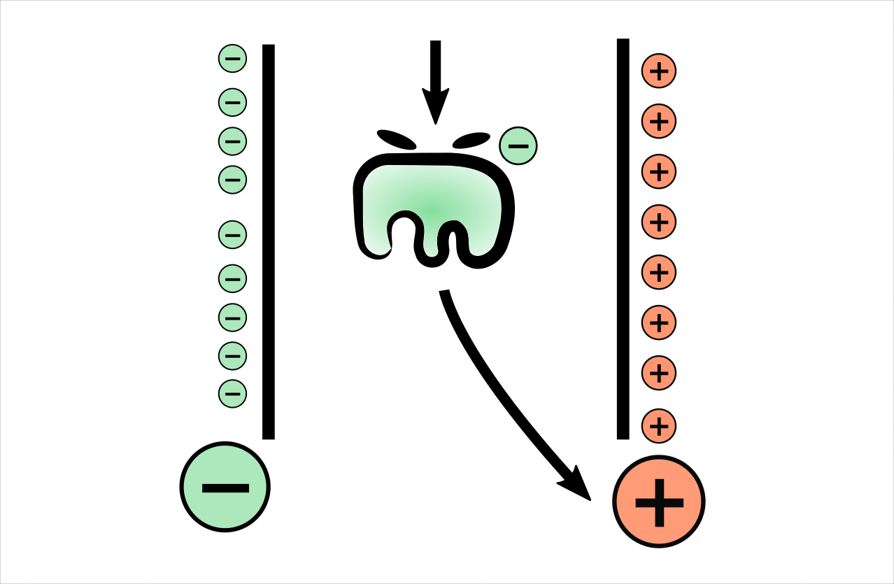
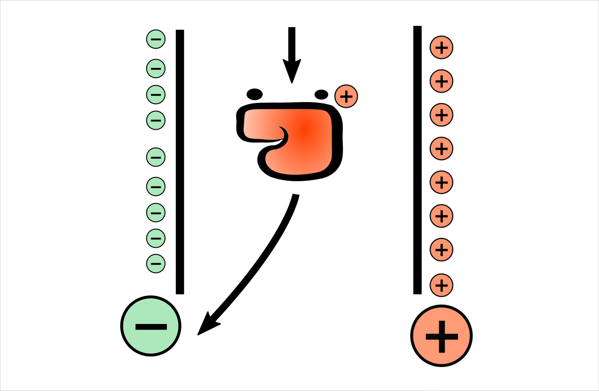
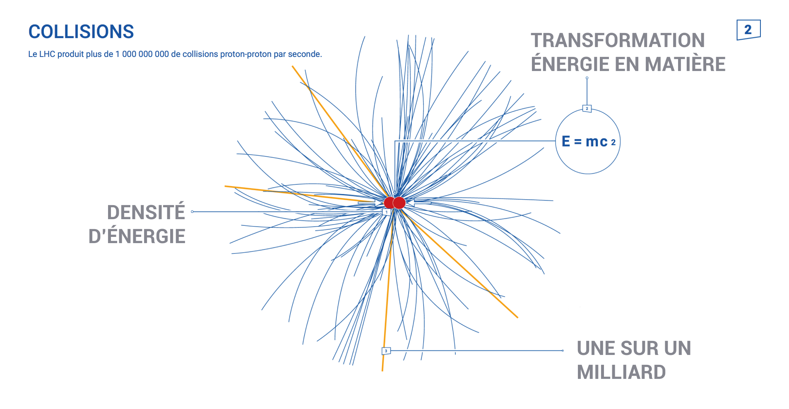

Installez-vous
La séance va bientôt commencer
Le détecteur
c'est toi !
Qui es-tu ?
De quoi
es-tu fait ?
De quoi
es-tu fait ?
De particules !
De particules !
Les particules sont de minuscules morceaux de matière qui composent tout ce qu'on trouve dans notre Univers.

Tout est fait de particules !
Tout est fait de particules !
Même le ketchup !
Tout est fait de particules !
Même la pluie !
Tout est fait de particules !
Même les étoiles !

Comme des briques
de Lego™
Comme des briques
de Lego™
- Il existe plusieurs types de particules
- Certaines sont lentes, d'autres se déplacent rapidement.
- Certaines sont lourdes, d'autres n'ont pas de masse du tout.
- Certaines ont une charge électrique positive ou négative.
Comment trouver des particules ?
Comment trouver des particules ?
- On ne peut pas les voir...
- Ni les entendre, ni les toucher, ni les goûter, ni les sentir...
- Il faut les détecter...
- Avec une machine appelée un détecteur.
- Détecter signifie observer des signes qui prouvent l'existence de quelque chose
Comment trouver des particules ?
Comme quand on observe les traces des animaux...

Comment trouver des particules ?
On a tous au moins un détecteur à la maison

Un message de l'amicale des particules

Aucune particule ne sera maltraitée durant le déroulement de cet atelier
Electron vs Proton


Electron vs Proton
Il est petit, léger
En se déplaçant, il fait circuler l'électricité
Il permet de faire fonctionner les objets électroniques.
Il a une charge négative ➖.
Electron vs Proton
Il est plus gros, plus lourd.
Il peut traiter certains types de cancers.
Il a une charge positive ➕.
Détecter une particule chargée
Détecter une particule chargée
Détecter une particule chargée
Photon vs Neutron


Photon vs Neutron
Il est petit, léger, constamment en mouvement
C'est grâce à lui que nous percevons la lumière
Il n'a pas de charge électrique.
Photon vs Neutron
Il est plus gros, plus lourd.
Il permet de fournir de l'énergie nucléaire
Il n'a pas de charge électrique.
Sans charge
Comment les détecter ?

Détecter la masse d'une particule
On utilise un détecteur à calorimètre
Matière et antimatière
- Aux premiers instants du Big Bang, l'univers était fait de matière et d'antimatière.
- Mais quand matière et antimatière se rencontrent, elles disparaissent.
- Elles sont nées en même temps mais aujourd'hui toute l'antimatière a disparu.
- On peut recréer de l'antimatière, comme on le fait au CERN, mais elle a une durée de vie très courte.
Positron et antiproton


Positron et antiproton
C'est l'antiparticule de l'électron
Il a une charge positive ➕.
Positron et antiproton
C'est l'antiparticule du proton
Il a une charge négative ➖.
Et au CERN ?
Et au CERN ?

Et au CERN ?
Et au CERN ?

Pour Résumer
Pour Résumer

Les particules
mystères
Credits
Auteurs
- Maria Alandes Pradillo
- Elisabeth Blazianu
- Brice Copy
- Sascha Melhase
- Lucas Van Mol
Crédits image
- Atom Diagram : Atom Diagram by Alexander Panosovsky from the Noun Project
- BBC Micro Bit : BBC Micro Bit by fredley from the Noun Project
- Ketchup Face : https://linktr.ee/wuestenigel
- Smoke Detector, Lego Bricks, Lightning, Rain, Stars : Wikimedia Commons
Crédits image
- Person : person by Alice Design from the Noun Project
- Structure de la matière : Jonathan Delrue
- Emojis Cheese, Mouse : UNICODE consortium
- Autres : CERN
Crédits sons
- Thump, Accumulate, Intro and Outro sounds :
https://freesound.org - Music elevator : Jay_You
- Cheering : Halleck
- Food Market : VincePest11
- Explosion in the air : milkmusic
- Mud splat : Breviceps
- Tada Fanfare A : plasterbrain